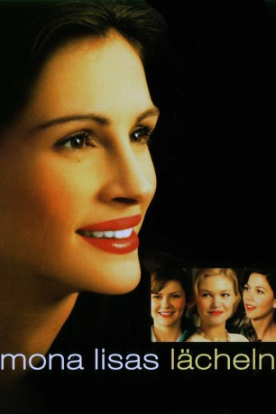
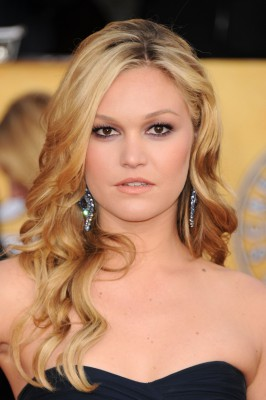
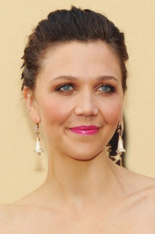
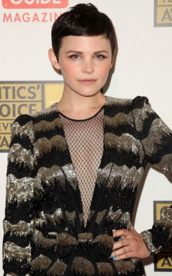
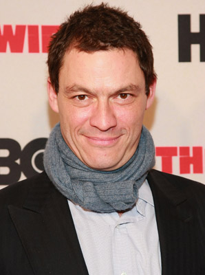
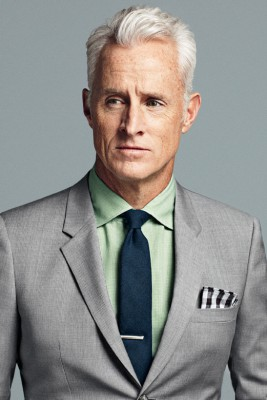
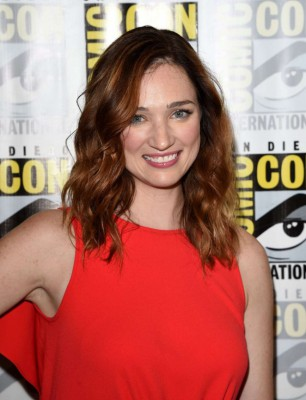
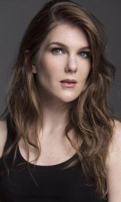

#4671 Mona Lisas Lächeln
Alternativ: Mona Lisa Smile
 
 IMDB-Wertung: 6.4 / 10
IMDB-Wertung: 6.4 / 10  Metascore: 0
Metascore: 0 
Das Mädchen-College Wellesley ist Amerikas Kaderschmiede der Eliten. Dorthin wird in den 50er Jahren inmitten der restriktiven McCarthy-Ära die liberale Kunstdozentin Katherine Watson berufen. Schon bald stellt diese entsetzt fest, dass sie es nicht mit der zukünftigen intellektuellen Elite des Landes zu tun hat, sondern quasi mit einem lebendigen Genpool, der einzig zur Erhöhung der Chancen auf dem heißumkämpften Heiratsmarkt eine fundierte Ausbildung erhält. Ein Affront für die emanzipierte Pädagogin, gegen den sie rebelliert.
Jahr: 2003
Dauer: 119 Minuten
FSK: 0
Land: USA Studio: Columbia PicturesTonspuren: DD5.1 - ,
Untertitel: Deutsch,
Auflösung: 1080p (1920x1040) Größe: 9728 MB
Genre: Drama
Regisseur: Mike Newell
Drehbuch: Randall McCormick
Soundtrack:
Darsteller:
 Julia Roberts als Katherine Ann Watson
Julia Roberts als Katherine Ann Watson Kirsten Dunst als Betty Warren
Kirsten Dunst als Betty Warren-  Julia Stiles als Joan Brandwyn
-  Maggie Gyllenhaal als Giselle Levy
-  Ginnifer Goodwin als Connie Baker
-  Dominic West als Bill Dunbar
- Juliet Stevenson als Amanda Armstrong
- Marcia Gay Harden als Nancy Abbey
-  John Slattery als Paul Moore
 Marian Seldes als President Jocelyn Carr
Marian Seldes als President Jocelyn Carr- Jennie Eisenhower als Girl at the Station
- Laura Allen als Susan Delacorte
- Topher Grace als Tommy Donegal
- Jordan Bridges als Spencer Jones
- Ebon Moss-Bachrach als Charlie Stewart
- Christopher Braden als Bartender
- Chuck Montgomery als Tall Man
- Taylor Roberts als Louise
- John Scurti als Stan Sher
 Lisa Roberts Gillan als Miss Albini
Lisa Roberts Gillan als Miss Albini- Aleksa Palladino als Frances the Girl in Italian Class
- Charles Techman als Harvard Dorm Monitor
- Lauren Adler als Art History Student
- Janine Barris als Art History Student
- Emily Bauer als Art History Student
- Kirstie Bingham als Art History Student
- Jennifer Bowen als Art History Student
- Nikki Coble als Art History Student
-  Kristen Connolly als Art History Student
- Annika Marks als Art History Student
-  Lily Rabe als Art History Student
- Katherine Reilly als Art History Student
 Krysten Ritter als Art History Student
Krysten Ritter als Art History Student- Brandy Tipton als Art History Student
- Maja Wampuszyc als Art History Student
- Mary Pascoe als Photographer
- Elise Passamani als Phyllis
 Richard O'Rourke als Igor
Richard O'Rourke als Igor- Madeleine Hackney als Dancer
- Daniel Ponickly als Dancer
- Gabriel Vaughan als Dancer
- Kim Villanueva als Dancer
- Tori Amos als Singer
- Kevin Osborne als Band Announcer
 Julie Wagner als Bartender
Julie Wagner als Bartender- Jennifer Anderson als Projectionist
- Chris Burke als Custodian
- Dorothy Dwyer als Faculty
- Melanie Angelique Moyer als Christmas Student
- Canedy Knowles als Christmas Student
Datei: X:\2003(G-M)\Mona Lisas Lächeln (2003, FSK0, 1920x1040).mkv seit 02.11.2016
Festplatte: HD 2003-2004-2005(A-F)
 Es gibt insgesamt 33 Filme in der Gruppe '2003(G-M)'
Es gibt insgesamt 33 Filme in der Gruppe '2003(G-M)'